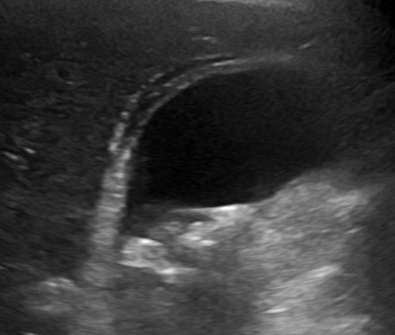

Ficha del catálogo
Colecistitis aguda
- Sistema
- Digestivo
- Modalidad
- US
- Región
- Hipocondrio derecho / vía biliar
- Dificultad
- Básico
Es la inflamación aguda de la pared vesicular, en la gran mayoría de los casos secundaria a la obstrucción del conducto cístico por un lito. Se manifiesta con dolor persistente en hipocondrio derecho, fiebre y leucocitosis. La forma alitiásica aparece sobre todo en pacientes críticos, con ayuno prolongado o sepsis, y tiene peor pronóstico.
Técnica
El ultrasonido abdominal es el estudio de primera línea. Se solicita ayuno de 6 a 8 horas para lograr una vesícula distendida y se explora con transductor convexo de 3 a 5 MHz, complementando con transductor lineal para ver el detalle de la pared. Se estudia en decúbito supino y decúbito lateral izquierdo, buscando movilizar los litos y evaluar el signo de Murphy ecográfico bajo el transductor.
Qué observar
- Litos en el interior de la vesícula, con sombra acústica posterior y movilidad con los cambios de posición
- Engrosamiento de la pared vesicular por encima de 3 mm, medido en la cara anterior
- Líquido perivesicular o colecciones adyacentes al lecho vesicular
- Distensión vesicular con diámetro transverso mayor de 4 cm
- Signo de Murphy ecográfico positivo al comprimir directamente sobre la vesícula
- Lito impactado en el infundíbulo o en el cuello vesicular que no se moviliza
Hallazgos
Vesícula distendida con litiasis, pared engrosada y a menudo con aspecto estratificado o en capas por edema subseroso, con lámina de líquido perivesicular. El contenido puede mostrar barro biliar ecogénico sin sombra que forma nivel. En las formas complicadas se observan gas intramural con artefacto en cola de cometa en la colecistitis enfisematosa, membranas intraluminales desprendidas en la forma gangrenosa, o una colección organizada con defecto de la pared cuando existe perforación.
Perlas
El dato más útil no es un signo aislado sino la combinación de litiasis más Murphy ecográfico positivo, porque juntos alcanzan un valor predictivo positivo muy alto. El engrosamiento de la pared por sí solo es inespecífico: La hipoalbuminemia, la insuficiencia cardiaca, la hepatitis y la ascitis engruesan la pared sin que exista inflamación vesicular.
Diagnóstico diferencial
- Cólico biliar simple
- Hay litiasis pero la pared es normal, no existe líquido perivesicular y el dolor cede en pocas horas.
- Colangitis aguda
- Predomina la dilatación de la vía biliar con ictericia y fiebre alta (la pared vesicular puede estar normal).
- Adenomiomatosis vesicular
- Engrosamiento con senos de Rokitansky-Aschoff que dan artefacto en cola de cometa, sin dolor focal ni líquido perivesicular.
- Carcinoma de vesícula
- Engrosamiento asimétrico e irregular, masa que invade el hígado adyacente y adenopatías regionales.
- Úlcera péptica perforada
- Neumoperitoneo y líquido libre difuso, con vesícula de aspecto conservado.
Simuladores
- Pared vesicular engrosada por hipoalbuminemia, insuficiencia cardiaca o hepatopatía crónica
- Vesícula contraída posprandial, que aparenta pared gruesa por falta de ayuno
- Adenomiomatosis y colesterolosis, que engruesan la pared de forma crónica
Por modalidad
- US
- Método inicial de elección: Detecta litos, mide la pared, valora el Murphy focal y el líquido perivesicular en tiempo real y sin radiación
- TC
- Se reserva para sospecha de complicaciones y para el paciente con abdomen agudo indiferenciado; muestra bien el gas intramural, los abscesos y la perforación, pero pasa por alto muchos litos de colesterol
- RM
- La colangiorresonancia se usa cuando se sospecha coledocolitiasis asociada y para definir la anatomía biliar antes de la cirugía
Protocolo
Ultrasonido con transductor convexo 3-5 MHz en planos subcostal e intercostal, con inspiración sostenida, más transductor lineal de alta frecuencia para la pared. Se completa con Doppler color para valorar hiperemia parietal. En tomografía se emplea fase portal a los 60 a 70 segundos tras el medio de contraste intravenoso, con cortes finos y reconstrucciones coronales.
Clasificación
Las guías de Tokio clasifican la gravedad en tres grados. El grado I o leve corresponde al paciente sin comorbilidad ni disfunción orgánica. El grado II o moderado se define por leucocitosis marcada, masa palpable, más de 72 horas de evolución o inflamación local importante como absceso o peritonitis biliar. El grado III o grave implica disfunción de al menos un órgano, e incluye compromiso cardiovascular, neurológico, respiratorio, renal, hepático o hematológico. La clasificación orienta el momento de la colecistectomía frente al drenaje percutáneo.
Errores frecuentes
- Informar colecistitis solo por el grosor de la pared, sin integrar el dolor focal ni los litos
- Confundir el gas duodenal adyacente con gas intramural de colecistitis enfisematosa
- Pasar por alto un lito impactado en el infundíbulo, que queda oculto por la sombra del cuello vesicular

colecistitis vesicula litiasis Murphy ecografico ultrasonido Tokio abdomen agudo